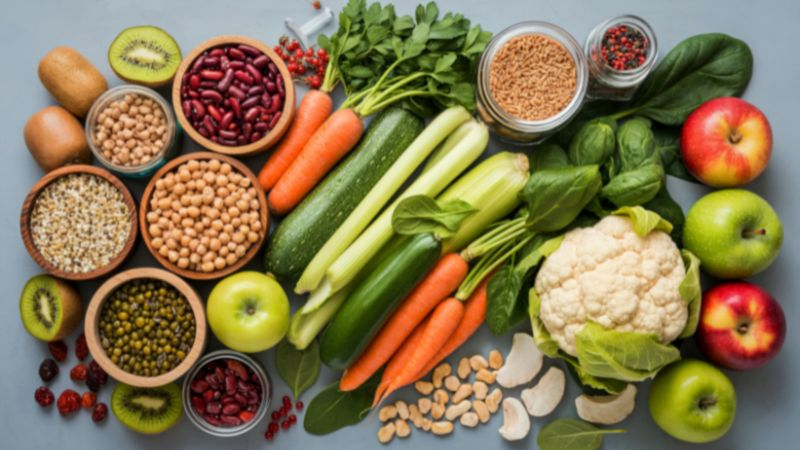

Alívio Natural: 7 Sucos Laxantes Poderosos para o Intestino Preso
Conselho Editorial Portal BioMed
Revisão de medicina natural e nutrição digestiva
A constipação não é apenas um desconforto; é um sinal de que o seu sistema digestivo precisa de apoio mecânico e químico. Os sucos laxantes, quando preparados corretamente conservando as suas fibras, funcionam como um "lubrificante biológico" que facilita o trânsito intestinal de forma suave e segura.

Como funcionam estes sucos no cólon?
Ao contrário dos laxantes de farmácia que podem irritar a mucosa, estes sucos utilizam a Pectina, a Celulose e o Sorbitol presentes nas frutas para atrair água para o interior do intestino, amolecendo as fezes e estimulando os movimentos peristálticos.
Suco de Mamão, Ameixa e Aveia
Esta é a combinação clássica de ouro. O mamão contém papaína, uma enzima que ajuda a digerir proteínas, enquanto a aveia fornece fibra insolúvel.
- 1/2 mamão papaia
- 1 ameixa seca sem caroço
- 1 colher de sopa de aveia em flocos
- 200 ml de água
Suco de Beterraba, Cenoura e Laranja
Rico em fibras solúveis que ajudam a formar o bolo fecal e vitaminas que protegem a mucosa gástrica.
- 1/2 beterraba
- 1/2 cenoura pequena
- 1 laranja (com o bagaço)
- 1 copo de água

Suco de Morango e Kiwi com Linhaça
O kiwi é uma das frutas mais potentes contra a prisão de ventre crônica devido à sua enzima actinidina.
- 1/2 xícara de morangos
- 1 kiwi maduro
- 2 colheres de sopa de farinha de linhaça
- 1 copo de água
Suco de Aloe Vera e Pepino
O gel de aloe vera contém antraquinonas, compostos com efeito laxante suave e calmante sobre a mucosa intestinal inflamada.
- 3 colheres de sopa de gel de aloe vera (interior da folha)
- 1/2 pepino com casca
- Suco de 1/2 limão
- 200 ml de água
Suco de Espinafre, Maçã Verde e Gengibre
A maçã verde é rica em pectina, uma fibra que atrai água para o cólon. O gengibre estimula os movimentos peristálticos de forma natural.
- 1 xícara de espinafre fresco
- 1 maçã verde com casca
- 1 pedaço de gengibre (2 cm)
- 1 copo de água
Suco de Pera e Farelo de Aveia
A pera contém sorbitol, um açúcar-álcool que atua como laxante osmótico natural, atraindo água para o intestino grosso.
- 2 peras maduras com casca
- 2 colheres de sopa de farelo de aveia
- 1/2 colher de chá de canela em pó
- 150 ml de água
Suco de Ameixas Secas com Chá de Dente-de-leão
O clássico definitivo. As ameixas secas concentram fibra solúvel, insolúvel e sorbitol natural. O chá de dente-de-leão atua como colagogo biliar, estimulando a digestão a partir do fígado.
- 6 ameixas secas hidratadas (demolhadas 8 horas)
- 1 xícara de chá de dente-de-leão (frio)
- 1/2 colher de chá de mel natural
Protocolo para Máxima Eficácia
- ✅ Em jejum: O sistema digestivo responde melhor ao acordar.
- ✅ Zero Açúcar: O açúcar refinado pode causar fermentação indesejada.
- ✅ Hidratação extra: Beba 2 copos de água pura após o suco.
Quando consultar um médico?
Se a prisão de ventre persistir por mais de 2 semanas, se houver dor abdominal intensa ou presença de sangue, suspenda os remédios caseiros e consulte um gastroenterologista imediatamente. Estes sucos são aliados preventivos e de manutenção.
Fonte: Recomendações da Sociedade Espanhola de Patologia Digestiva / Tua Saúde / Portal BioMed.
Sofrendo com Formigamentos e Queimação nos Pés e Mãos?
A neuropatia periférica pode acabar com o seu sono e qualidade de vida. Nossa equipe clínica publicou um laudo detalhado sobre um novo suplemento natural neurotrópico que está ajudando a restaurar a saúde dos nervos no Brasil.
Ver Análise Completa do Especialista →